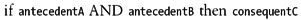
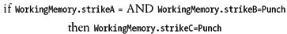

|
|
< Day Day Up > |
|
11.2 Fighting Game Strike PredictionIn this example, we aim to predict a human opponent's next strike in a martial arts fighting game. The basic assumption is that the player will try to use combinations of strikes to find the most effective combination. These combinations can be something such as low kick, low kick, high kick; or punch, punch, power kick; and so on. We want the computer opponent to somehow learn to anticipate which strike the player will throw next given the most recently thrown strikes and some history of the player's strike patterns. If the computer can anticipate the next strike, it can throw an appropriate counter strike, or block, or take evasive action such as side-stepping or back-stepping. This will add a higher level of realism to the combat simulation and present new challenges for the player. To achieve this, we're going to implement a rule-based system with a learning capability. We will achieve this learning by weighting each rule to reinforce some while suppressing others. In Chapter 13 we'll look at an alternative approach to this problem whereby instead of rules, we'll use conditional probabilities to help predict the next strike. To keep this example manageable for discussion purposes, we're going to simplify things a bit. We'll assume that the player's strikes can be classified as punch, low kick, or high kick. And we're going to track three-strike combinations. Even with these simplifications we still end up with 27 rules to capture all possible three-strike combinations of punch, low kick, and high kick. We'll look at the rules in a moment, but first let's take a look at the structures and classes we need to implement the working memory and rules memory. 11.2.2 Working MemoryExample 11-6 shows how the working memory is implemented. Example 11-6. Working memory
enum TStrikes {Punch, LowKick, HighKick, Unknown};
struct TWorkingMemory {
TStrikes strikeA; // previous, previous strike (data)
TStrikes strikeB; // previous strike (data)
TStrikes strikeC; // next, predicted, strike (assertion)
// note: can add additional elements here for things such as which counter
to throw, etc....
};
TWorkingMemory WorkingMemory; // global working memory variable
TStrikes is just an enumerated type for the possible strikes. Note that we include Unknown for the case when the computer does not know what strike will be thrown. TWorkingMemory is the structure defining the working memory. Here we have three elements: strikeA, strikeB, and strikeC. strikeC will store the predicted next strike to be thrown. This will be asserted by forward chaining through the rules given the observed facts, strikeA and strikeB. strikeB represents the most recently thrown strike while strikeA represents the strike thrown before strikeB. The three-strike combinations are strikeA, then strikeB, then strikeC, in that order, where strikeC is predicted by the rule system. We can add more facts or assertions to the working memory if desired. For example, we can include a counter strike element that can be asserted given the predicted next strike. If the predicted next strike is, say, low kick, we can have rules that assert an appropriate counter such as back step, and so on. Given the way we're implementing the working memory and rules in this example, you easily can add new elements in the working memory as well as new rules. 11.2.3 RulesExample 11-7 shows the rules class for this example. Note that we are not going to hardcode if-then rules. Instead, we'll keep an array of TRule objects to represent the rules memory. We easily could have used if-then constructs; however, the approach we're taking here makes it easier to add or delete rules and facilitates backward chaining, which we're going to use to a limited extent. We'll come back to this subject a little later. Example 11-7. Ruleclass
class TRule {
public:
TRule();
void SetRule(TStrikes A, TStrikes B, TStrikes C);
TStrikes antecedentA;
TStrikes antecedentB;
TStrikes consequentC;
bool matched;
int weight;
};
The TRule object contains five members. The first two are antecedentA and antecedentB. These members correspond to the previous two strikes thrown by the player. The next member, consequentC, corresponds to the predicted next strike—the strike that we'll assert using the rules. If we were using standard if-statements for the rules, we'd have rules that look something like this: In an if-then style rule such as if X then Y, the "if X" part is the antecedent, or the premise. The "then Y" part is the consequent, or conclusion. In our example, we're assuming that our rules consist of the conjunction (logical AND) of two parameters: antecedentA and antecedentB. The then-part in our rules, consequentC, is the expected strike given the two previous strikes. The next member in TRule is matched. This flag is set to true if the antecedents in the rule match the facts stored in working memory. More specifically, for a given rule, if antecedentA equals WorkingMemory.strikeA and antecedentB equals WorkingMemory.strikeB, the rule is matched. It's possible that more than one rule will match a given set of facts. This matched member helps us keep track of those that do match so that we can pick one to fire during the conflict resolution phase. The final member in TRule is weight. This is a weighting factor that we can adjust to reinforce or inhibit rules. In a sense it represents the strength of each rule. Looking at it from a different angle, the weight represents the computer's belief that a given rule is more or less applicable relative to other potentially matching rules. During the conflict resolution phase where more than one rule matches, we'll fire the one rule with the highest weight to make a strike prediction. If after the next strike is thrown, we see that we fired the wrong rule—that is, we made a wrong prediction—we'll decrement the fired rule's weight to suppress it. Further, we'll figure out which rule should have been fired and increment its weight to reinforce it. TRule contains only two methods, SetRule and the constructor. The constructor simply initializes matched to false and weight to 0. We use SetRule to set the other members—antecedentA, antecedentB, and consequentC—therefore defining a rule. SetRule is illustrated in Example 11-8. Example 11-8. SetRule method
void TRule::SetRule(TStrikes A, TStrikes B, TStrikes C)
{
antecedentA = A;
antecedentB = B;
consequentC = C;
}
We need a few global variables for this example. The first is WorkingMemory, as we showed in Example 11-6. Example 11-9 shows the others. Example 11-9. Global variablesTRule Rules[NUM_RULES]; int PreviousRuleFired; TStrikes Prediction; TStrikes RandomPrediction; int N; int NSuccess; int NRandomSuccess; Here, Rules is an array of TRule objects. The size of the Rules array is set to NUM_RULES, which is defined as 27 for this example. PreviousRuleFired is an integer type that we'll use to store the index to the rule fired during the previous game cycle. Prediction keeps track of the strike prediction the rule system makes. Technically we don't need this because the prediction also is stored in working memory. We're going to use RandomPrediction to store a randomly generated prediction to compare with our rule-based prediction. What we'll really compare is the success rate for our rule-based predictions versus the success rate for random guesses. The global variable N will store the number of predictions made. NSuccess will store the number of successful predictions made by our rule-based systems, while NRandomSuccess will store the number of successes for the random guesses. We calculate the success rates by dividing the number of successes by the total number of predictions. 11.2.4 InitializationAt the start of this simulation, or at the start of the game, we need to initialize all the rules and working memory. The Initialize function shown in Example 11-10 takes care of this for us. Example 11-10. Initialize function
void TForm1::Initialize(void)
{
Rules[0].SetRule(Punch, Punch, Punch);
Rules[1].SetRule(Punch, Punch, LowKick);
Rules[2].SetRule(Punch, Punch, HighKick);
Rules[3].SetRule(Punch, LowKick, Punch);
Rules[4].SetRule(Punch, LowKick, LowKick);
Rules[5].SetRule(Punch, LowKick, HighKick);
Rules[6].SetRule(Punch, HighKick, Punch);
Rules[7].SetRule(Punch, HighKick, LowKick);
Rules[8].SetRule(Punch, HighKick, HighKick);
Rules[9].SetRule(LowKick, Punch, Punch);
Rules[10].SetRule(LowKick, Punch, LowKick);
Rules[11].SetRule(LowKick, Punch, HighKick);
Rules[12].SetRule(LowKick, LowKick, Punch);
Rules[13].SetRule(LowKick, LowKick, LowKick);
Rules[14].SetRule(LowKick, LowKick, HighKick);
Rules[15].SetRule(LowKick, HighKick, Punch);
Rules[16].SetRule(LowKick, HighKick, LowKick);
Rules[17].SetRule(LowKick, HighKick, HighKick);
Rules[18].SetRule(HighKick, Punch, Punch);
Rules[19].SetRule(HighKick, Punch, LowKick);
Rules[20].SetRule(HighKick, Punch, HighKick);
Rules[21].SetRule(HighKick, LowKick, Punch);
Rules[22].SetRule(HighKick, LowKick, LowKick);
Rules[23].SetRule(HighKick, LowKick, HighKick);
Rules[24].SetRule(HighKick, HighKick, Punch);
Rules[25].SetRule(HighKick, HighKick, LowKick);
Rules[26].SetRule(HighKick, HighKick, HighKick);
WorkingMemory.strikeA = sUnknown;
WorkingMemory.strikeB = sUnknown;
WorkingMemory.strikeC = sUnknown;
PreviousRuleFired = -1;
N = 0;
NSuccess = 0;
NRandomSuccess = 0;
UpdateForm();
}
Here we have 27 rules corresponding to all possible three-strike combinations of punch, low kick, and high kick. For example, the first rule, Rules[0], can be read as follows: Examining these rules, it's clear that more than one can match the facts stored in working memory at any given time. For example, if strikes A and B are punch, punch, respectively, the first three rules will match and the prediction could be punch, or low kick, or high kick. This is where the weight factor comes into play to help select which matching rule to fire. We simply select the rule with the highest weight. We pick the first rule encountered in the event that two or more rules have the same weight. After all the rules are set, the working memory is initialized. Basically, everything in working memory is initialized to Unknown. 11.2.5 Strike PredictionWhile the game is running we need to make a strike prediction after every strike the player throws. This will allow the computer opponent to anticipate the next strike the player will throw, as we've already discussed. In our example, we have one function, ProcessMove, to process each strike the player throws and to predict the next strike. Example 11-11 shows the ProcessMove function. Example 11-11. ProcessMove function
TStrikes TForm1::ProcessMove(TStrikes move)
{
int i;
int RuleToFire = -1;
// Part 1:
if(WorkingMemory.strikeA == sUnknown)
{
WorkingMemory.strikeA = move;
return sUnknown;
}
if(WorkingMemory.strikeB == sUnknown)
{
WorkingMemory.strikeB = move;
return sUnknown;
}
// Part 2:
// Process previous prediction first
// Tally and adjust weights
N++;
if(move == Prediction)
{
NSuccess++;
if(PreviousRuleFired != -1)
Rules[PreviousRuleFired].weight++;
} else {
if(PreviousRuleFired != -1)
Rules[PreviousRuleFired].weight--;
// Backward chain to increment the rule that
// should have been fired:
for(i=0; i<NUM_RULES; i++)
{
if(Rules[i].matched && (Rules[i].consequentC == move))
{
Rules[i].weight++;
break;
}
}
}
if(move == RandomPrediction)
NRandomSuccess++;
// Roll back
WorkingMemory.strikeA = WorkingMemory.strikeB;
WorkingMemory.strikeB = move;
// Part 3:
// Now make new prediction
for(i=0; i<NUM_RULES; i++)
{
if(Rules[i].antecedentA == WorkingMemory.strikeA &&
Rules[i].antecedentB == WorkingMemory.strikeB)
Rules[i].matched = true;
else
Rules[i].matched = false;
}
// Pick the matched rule with the highest weight...
RuleToFire = -1;
for(i=0; i<NUM_RULES; i++)
{
if(Rules[i].matched)
{
if(RuleToFire == -1)
RuleToFire = i;
else if(Rules[i].weight > Rules[RuleToFire].weight)
RuleToFire = i;
}
}
// Fire the rule
if(RuleToFire != -1) {
WorkingMemory.strikeC = Rules[RuleToFire].consequentC;
PreviousRuleFired = RuleToFire;
} else {
WorkingMemory.strikeC = sUnknown;
PreviousRuleFired = -1;
}
return WorkingMemory.strikeC;
}
You can break this function into three distinctive parts, as indicated by the comments // Part 1, // Part 2, and // Part 3. Let's consider each part in turn. 11.2.3 Part 1The first part populates the working memory. At the start of the game, after working memory is initialized and before any strikes are thrown, the working memory contains only Unknown values. This is insufficient to make a prediction, so we want to collect some data from the player as he begins to throw strikes. The first strike thrown is stored in WorkingMemory.strikeA and ProcessMoves simply returns Unknown without attempting a prediction. After the second strike is thrown, ProcessMoves is called again and this time the second strike is stored in WorkingMemory.strikeB. ProcessMoves returns Unknown one more time. 11.2.4 Part 2The second part in ProcessMoves takes care of processing the previous prediction—that is, the prediction returned the previous time ProcessMoves was called. The first task in part 2 is to determine whether the previous prediction was accurate. ProcessMoves takes move as a parameter. move is the strike the player threw most recently. Therefore, if move equals the previous prediction stored in Prediction, we have a success. In this case, we increment NSuccess so that we can update our success rate. Then we reinforce the previously fired rule because it was the correct one to fire given the strike history stored in working memory. To reinforce a rule we simply increment the rule's weight. If the previous prediction was wrong—that is, if move does not equal Prediction—we need to inhibit the previously fired rule. To do this we simply decrement the previously fired rule's weight. At the same time we want to reinforce the rule that should have been fired. To do this we have to figure out which rule should have been fired the last time ProcessMoves was called. To this end, we need to backward-chain a bit. Essentially, we know the move; therefore, we know what consequent should have been returned for the previous prediction. So, all we have to do is cycle through the last set of matched rules and pick the one who's consequentC equals move. Once we find the rule, we increment its weight and we're done. The remaining tasks in part 2 of ProcessMoves are relatively simple. The next task is to see if the previous random prediction was correct and, if so, to increment the number of successful random predictions, NRandomSuccess. Finally, we need to update the strikes in working memory in preparation for making a new prediction. To this end, we simply shift the strikes in working memory and add the most recent move. Specifically, WorkingMemory.strikeB becomes WorkingMemory.strikeA and move becomes WorkingMemory.strikeB. Now we're ready to make a new prediction for the new series of strikes stored in working memory. 11.2.5 Part 3Referring to // Part 3 in Example 11-11, the first task in the prediction process is to find the rules that match the facts stored in working memory. We take care of this in the first for loop under the // Part 3 comment. Note that this is the so-called match phase of the forward chaining algorithm. Matching occurs when a rule's antecedentA and antecedentB equal WorkingMemory.strikeA and WorkingMemory.strikeB, respectively. After the match phase, we need to pick one rule to fire from those that were matched during the matching phase. This is the conflict resolution phase. Basically, all we do is cycle through the matched rules and pick the one with the highest weight. We take care of this in the second for loop after the // Part 3 comment in Example 11-11. After this loop does its thing, the index to the selected rule is stored in RuleToFire. To actually fire the rule we simply copy consequentC of Rules[RuleToFire] to WorkingMemory.strikeC. ProcessMoves stores the index to the fired rule, RuleToFire, in PreviousRuleFired, which will be used in part 2 the next time ProcessMoves is called. Finally, ProcessMoves returns the predicted strike. That's pretty much all there is to this example. Upon running the example and simulating thrown strikes, by pressing buttons corresponding to punch, low kick, and high kick, we see that the rule-based system is pretty good at predicting the next strike. Our experiments saw success rates from 65% up to 80%. Comparing this to the roughly 30% success rate we achieved by guessing randomly, it's clear that such a rule-based system works very well. |
|
|
< Day Day Up > |
|